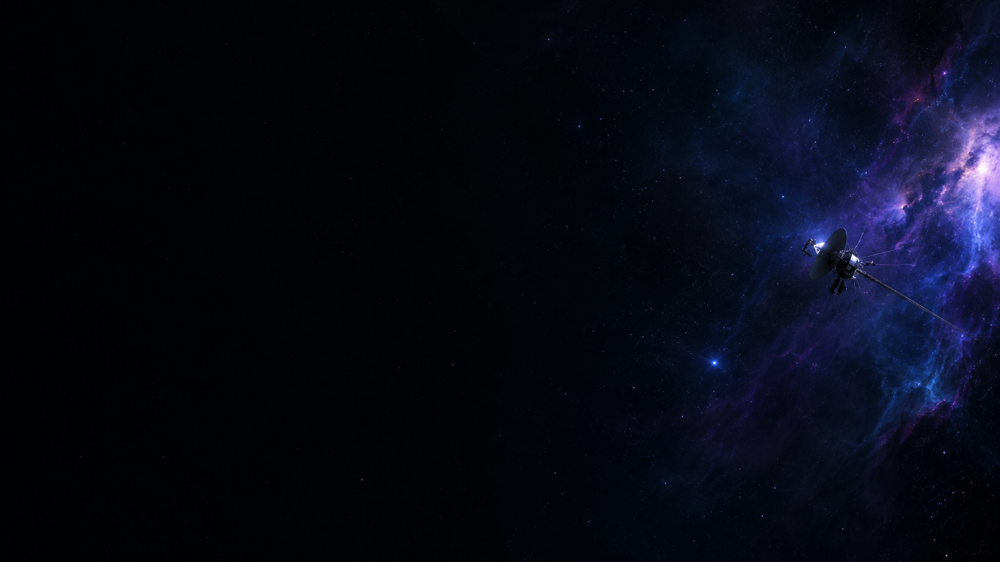

우주를 향한 호기심의 온도
당신만의 궤도를 설정하세요
반짝이는 별빛에서 위로를 얻는 분들을 위한 '감성 큐레이션'과, 거대한 우주 산업의 흐름을 쫓는 전문가를 위한 '심층 분석 리포트'를 동시에 발행합니다.
당신의 취향과 목적에 맞춰 광활한 우주와 연결되는 메일함을 만들어 보세요.

오직 당신의 궤도에 맞춘 컨텐츠
스타라이트 라운지
도심의 네온사인 속에서도 길잡이 별을 찾을 수 있는 실전 밤하늘 산책 가이드부터, 수천 년 전 인류가 상상력으로 그려낸 계절별 별자리 신화의 숨겨진 의미를 깊이 있게 조명합니다. 또한, 밤을 지새우며 렌즈 너머 묵묵히 광활한 우주를 담아내는 천체 사진가들의 따뜻하고 낭만적인 비하인드 스토리와 인터뷰를 함께 전합니다. 숫자와 공식으로 이루어진 차가운 과학으로서의 우주가 아닌, 지친 하루의 끝에서 마음의 평안을 얻고 밤하늘을 올려다볼 수 있는 작은 여유와 다정한 위로를 선물하는 감성 큐레이션입니다.
딥 스페이스 랩
급변하는 '뉴스페이스' 시대에 발맞춰 글로벌 우주 기업들의 투자 동향과 산업의 흐름, 그리고 판도를 뒤흔드는 혁신적인 로켓 재사용 기술의 현주소를 낱낱이 파헤칩니다. 나아가 제임스 웹 우주 망원경이 보내온 최신 관측 데이터가 현대 산업 전반에 미칠 파급력과, 민간 달 탐사 프로젝트가 창출할 새로운 경제적 가치를 다각도로 분석합니다. 거대한 우주 경제의 흐름을 한발 앞서 꿰뚫어 보고, 기술의 최전선에서 벌어지는 치열한 혁신의 과정들을 전문가 수준의 날카로운 비즈니스 인사이트로 제공합니다.
맞춤형 인사이트 보관소
당신이 선택한 궤도에 맞춰 전문 에디터가 정성껏 엄선한 고품질 아티클이 매주 금요일 아침 8시, 갓 내린 커피 향과 함께 당신의 메일함으로 조용히 배달됩니다. 바쁜 일정 탓에 메일을 놓치거나 지난 기사가 다시 궁금해지더라도 걱정하지 마세요. 오직 정기 구독자에게만 허락된 프라이빗 웹 라운지에 접속하시면, 첫 발행본부터 차곡차곡 쌓여온 모든 과거 아카이브를 카테고리별로 무제한 열람할 수 있습니다. 단순한 뉴스레터 구독을 넘어, 언제든 원할 때 찾아가 우주적 영감을 채울 수 있는 당신만의 아늑한 우주 도서관을 소장해 보세요.
보이저스 노트 탑승 가이드
- 원하는 궤도(스타라이트 라운지 vs 딥 스페이스 랩)를 선택해 구독을 신청합니다.
- 매주 금요일 오전 8시, 당신의 궤도에 맞춰 큐레이션된 뉴스레터가 도착합니다.
- 구독자 전용 라운지에 접속하여 과거의 모든 아카이브를 무제한으로 열람합니다.
정기 구독 신청하기
이번 주 금요일 아침, 일상 속으로 우주의 경이로움을 배달해 드립니다.
이름을 입력하여 궤도를 설정해 보세요!